Emergency Response Training
Portable HTML viewer generated from the fire drill training deck.
01 / 14
FIRE DRILL
TRAINING
TEMPE_OPERATIONS
& DATA_CENTER
WELLS FARGO
BY: CAPT. HAWTHORNE
THINGS WE WILL GO_OVER
GUARD POSITIONS & RESPONSIBILITIES
EMPLOYEE FLOW & EXITS
ASSEMBLY POINTS
GATE PROCEDURES (NORTH & SOUTH)
EMERGENCY SERVICES ARRIVAL
SITE MAP & LAYOUT
GUARD ROLES_OVERVIEW
COLLECTION_GUARD
TURNSTILE_GUARD
PERIMETER_GUARD
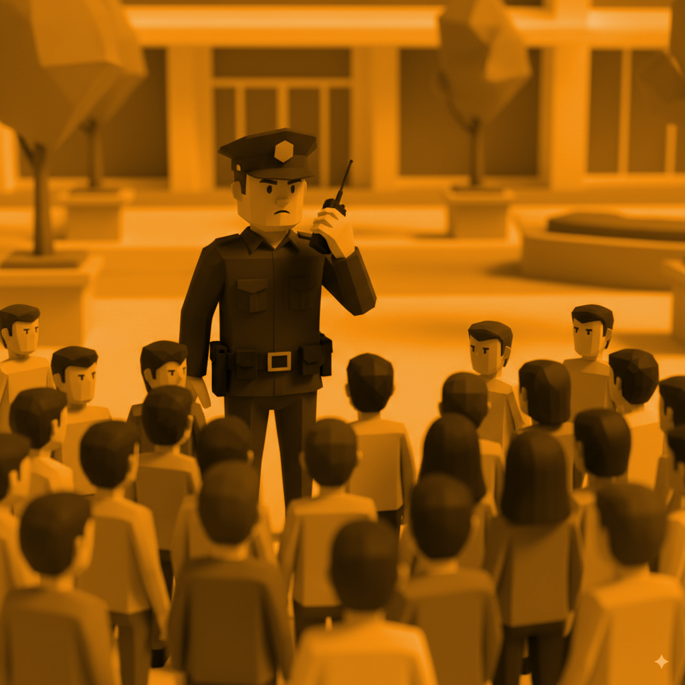
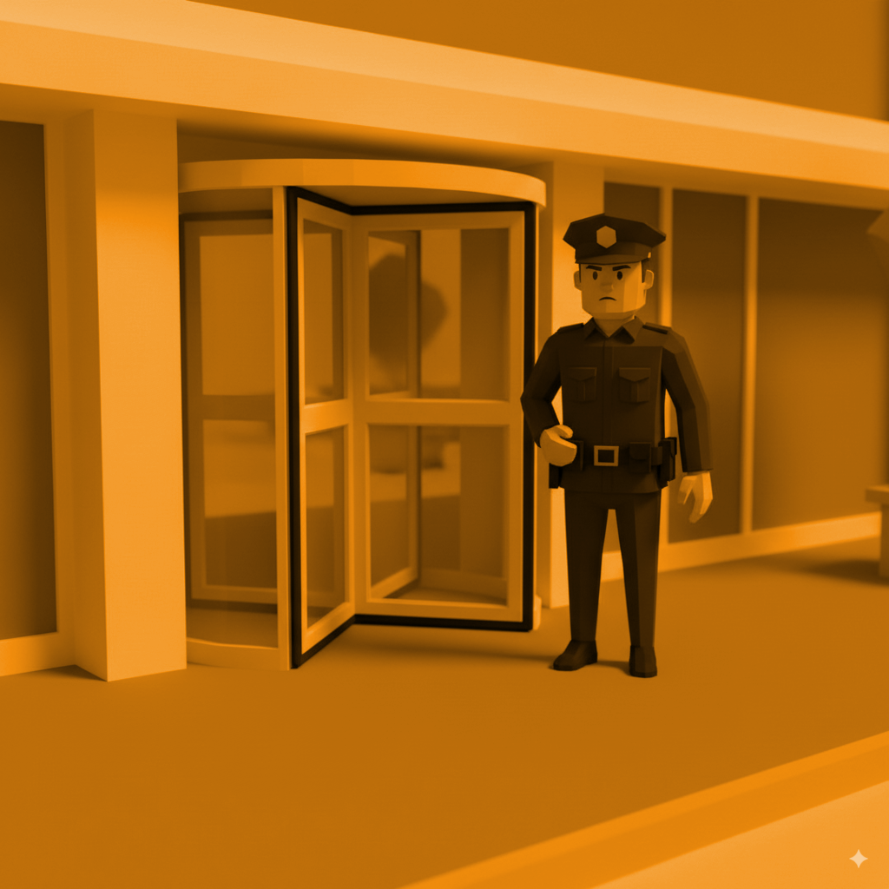
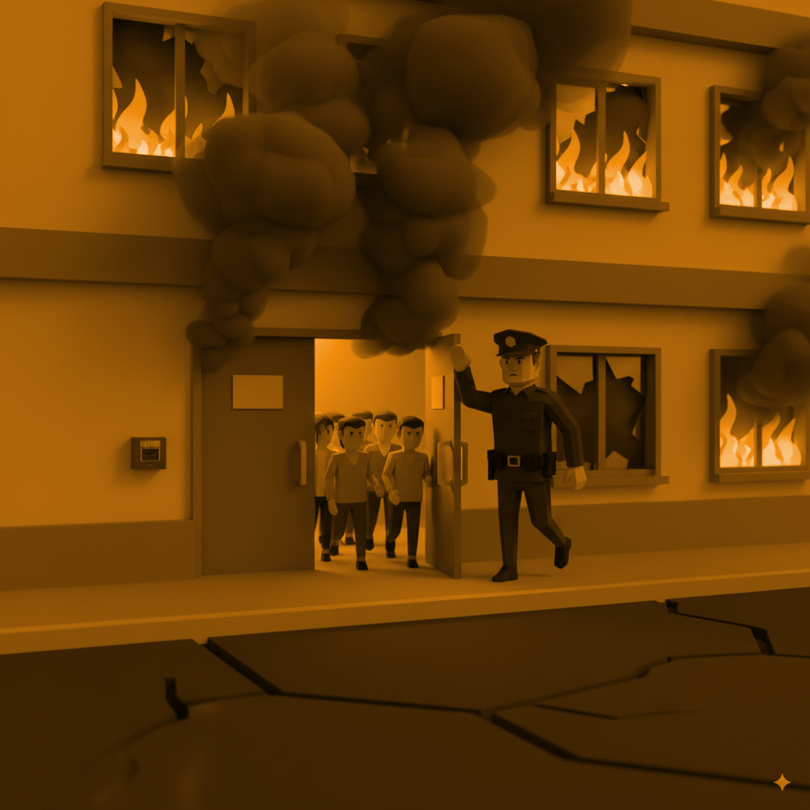
COLLECTION_GUARD
GATHER EMPLOYEES AT ASSEMBLY POINTS
ENSURE EMPLOYEES ARE 20 FT AWAY FROM BUILDINGS
KEEP EMPLOYEES OUT OF MAIN ROADWAYS
AWAIT SUPERVISOR CLEARANCE FOR RE-ENTRY
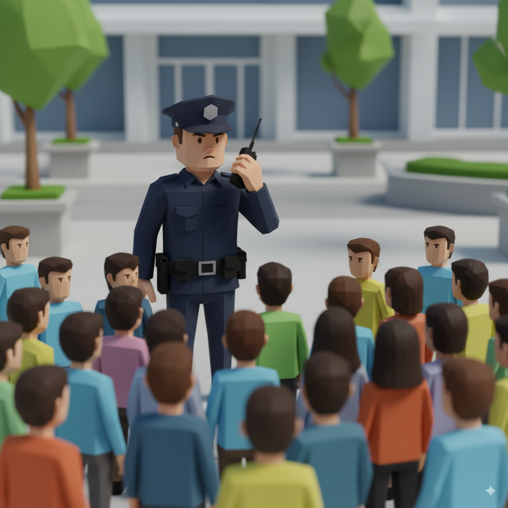
BREAK DOWN TURNSTILES FOR QUICK EXIT
VERIFY CREDENTIALS ON RE-ENTRY
MAINTAIN ORDER WITH LARGE GROUPS
ASSIST EMERGENCY SERVICES ENTERING BUILDING
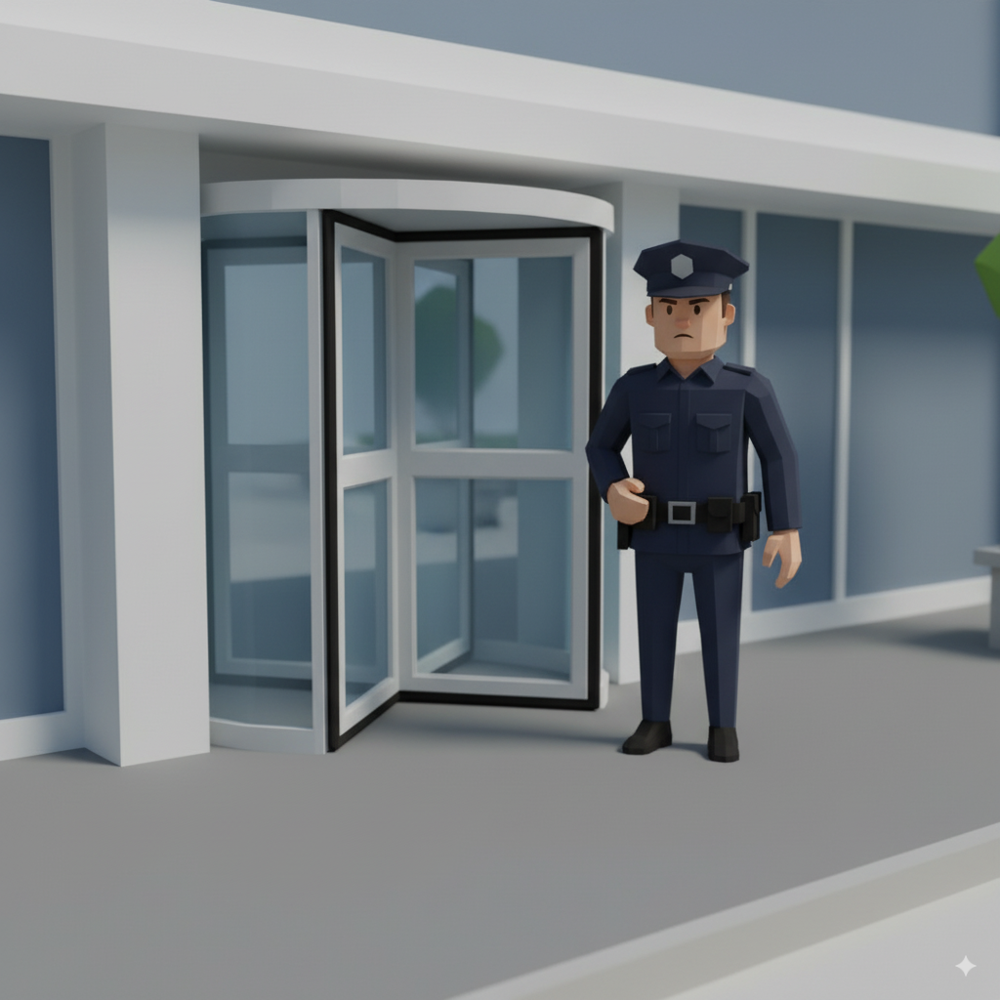
TURNSTILE_GUARD
KEY NUMBER 30 IS USED TO BREAK DOWN THE TURNSTILES
TURN THE 2ND TO THE BOTTOM KEY FROM RUN TO MAINTENANCE MODE AS SHOW IN THE PICTURE
THE TURNSTILES THEN HAVE THE ABILITY TO BE COLLAPSED TO ALLOW FLOW
DURING THE ACTIVE FIRE ALARM THE TURNSTILES AUTOMATICALLY HAVE THE ABILITY TO BE COLLAPSED
TURNSTILE_BREAKDOWN
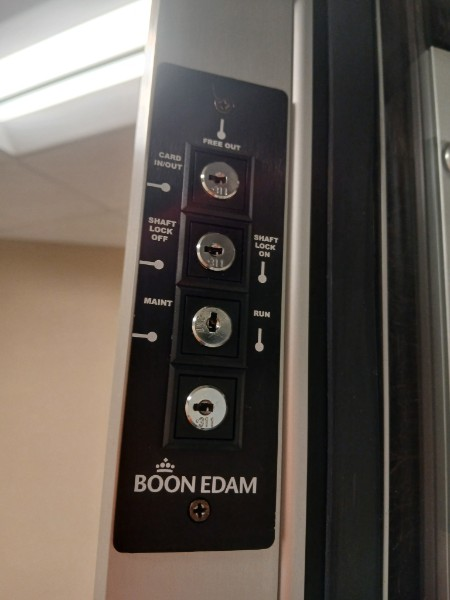
PERIMETER_GUARD
GUIDE EMPLOYEES THAT EXIT EMERGENCY EXITS DURING DRILL
GUIDE EMPLOYEES TO THE COLLECTION GUARD/ASSEMBLY AREA(S)
OPEN GATES AND DOORS TO ASSIST EXIT FLOW
POINT EMERGENCY SERVICES TO GATE ENTRY
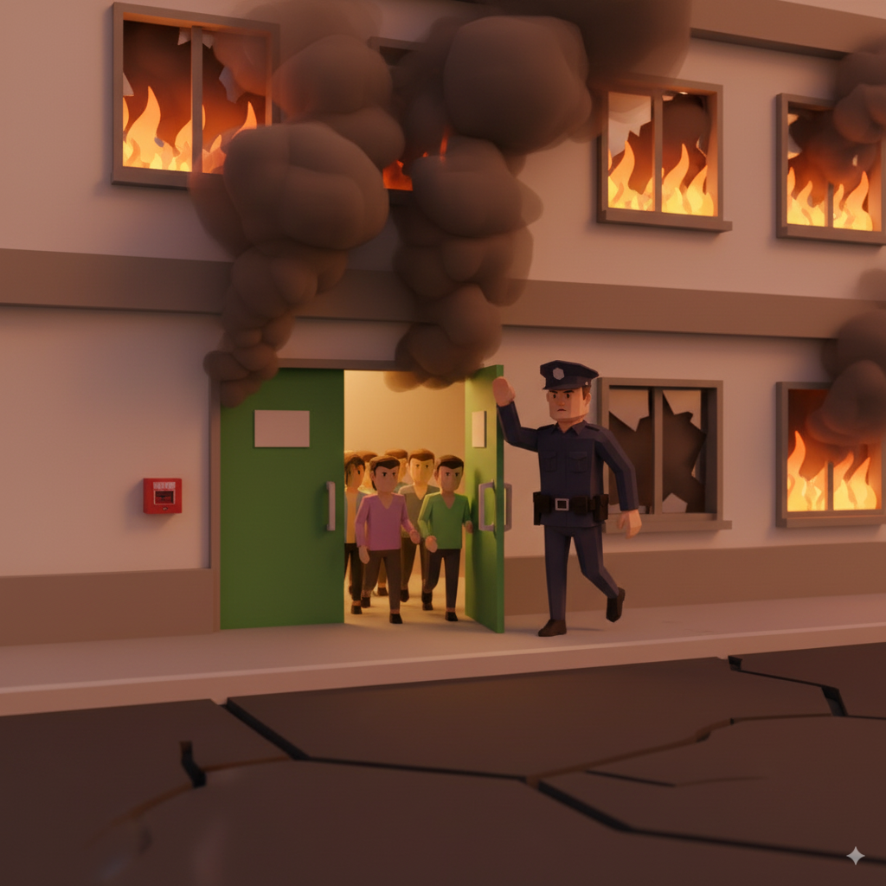
PERIMETER_GUARD
THIS GATE OFF OF ALAMEDA CAN BE OPENED WITH THE MASTER KEY IF NEEDED DURING THE DRILL OR BEFORE IF WE ARE AWARE OF THE DRILL BEFOREHAND
THIS GATE NEEDS TO BE LOCKED AGAIN WHEN THE DRILL IS OVER
PEOPLE DO TEND TO LEAVE OUT THE EMERGENCY EXITS IN THAT AREA
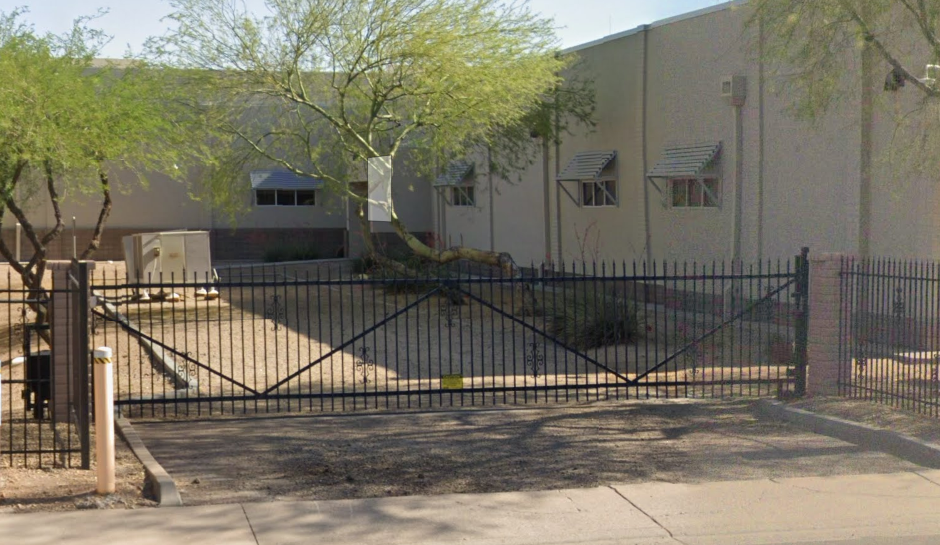
THE START OF THE FIRE_SCENARIO
AT THE START OF A REAL FIRE OR FIRE DRILL YOU WILL HEAR A LOUD PATTERNED ALARM GOING OFF IN THE AFFECTED LOCATION
OCCASIONALLY THE LOBBY WILL BE INFORMED FIRST, THEY WILL THEN INFORM THE REST OF THE STAFF TO RESPOND
THE LOBBY IMMEDIATELY ASSIGNS THE GUARD STAFF THEIR POSITIONS
GUARD STAFF IS REQUIRED TO STOP WHAT THEY ARE DOING AND RESPOND
NORTH & SOUTH_GATE PROCEDURES
DURING AN EMERGENCY OR EMERGENCY DRILL NO ENTRY OTHER THAN EMERGENCY SERVICES ARE PERMITTED
ONE LANE MUST REMAIN FREE FOR EMERGENCY SERVICES
CONE OFF BOTH LANES UNTIL THE EMERGENCY SERVICES ARRIVE OR UNTIL THE DRILL COMPLETES
LOBBY SUPERVISOR MUST NOT REMOTELY OPEN THE NORTH GATE (EXCEPT EMERGENCY SERVICES)
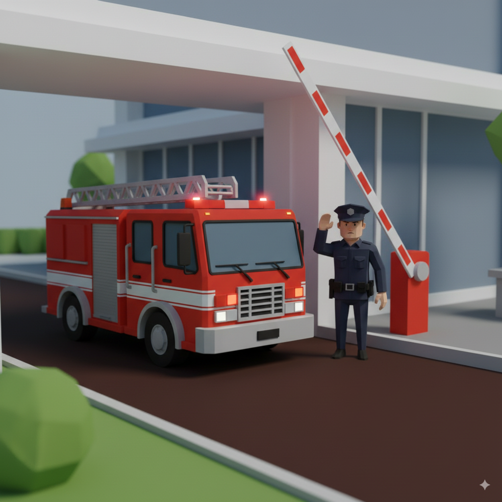
NORTH & SOUTH_GATE PROCEDURES
LIKE THE EXAMPLE IN THIS IMAGE HAVE ONE LANE CONED OFF AND ONE SIDE READY FOR EMERGENCY PERSONNEL
CONES SHOULD BE INSIDE OF THE SOUTH GATE GUARD SHACK
HAVE ANY OTHER VEHICLES LEAVE OR MOVE AWAY FROM THE OPEN LANE
WAIT FOR SUPERVISION TO GIVE THE CLEAR BEFORE REMOVING THE CONES AND ALLOWING TRAFFIC TO FLOW
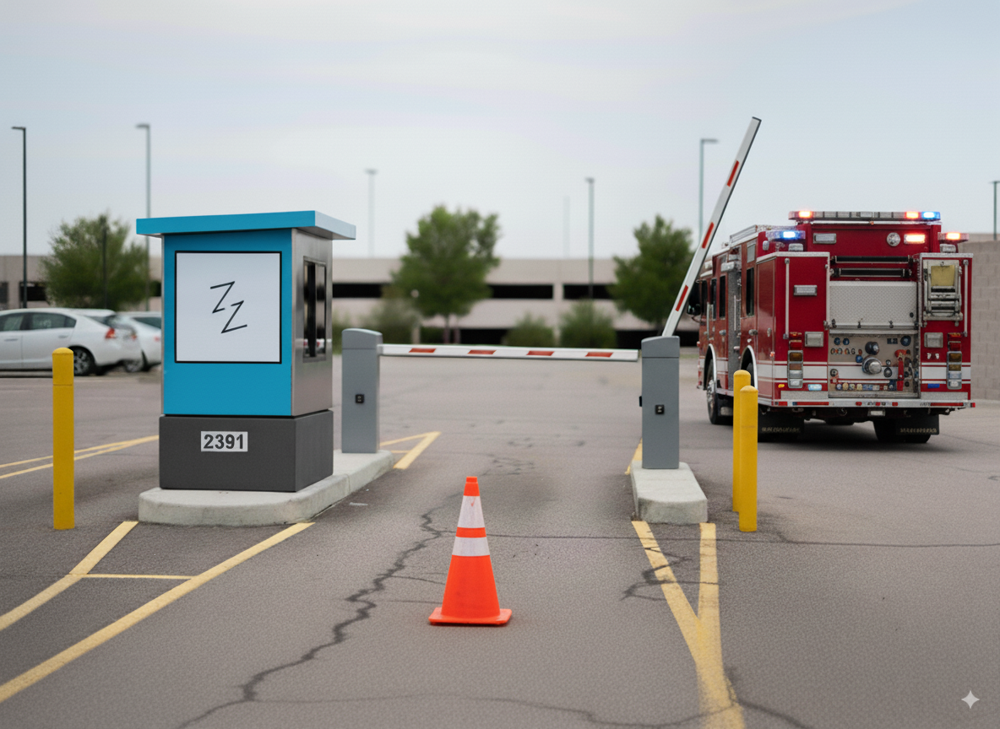
EMERGENCY SERVICES_ARRIVAL
OUR JOB IS TO HELP EMERGENCY PERSONNEL PERFORM THEIR DUTIES AS QUICKLY AS POSSIBLE TO MITIGATE POTENTIAL DAMAGES
NOTATE TIME OF ARRIVAL
NOTATE TIME OF DEPARTURE
THE LOBBY CONTACTS WF SECURITY RESPONSE CENTER (IN REAL SCENARIO)
INCIDENT REPORT IN REAL (IN REAL SCENARIO)
NOTATE THE TRUCK(S) NUMBER
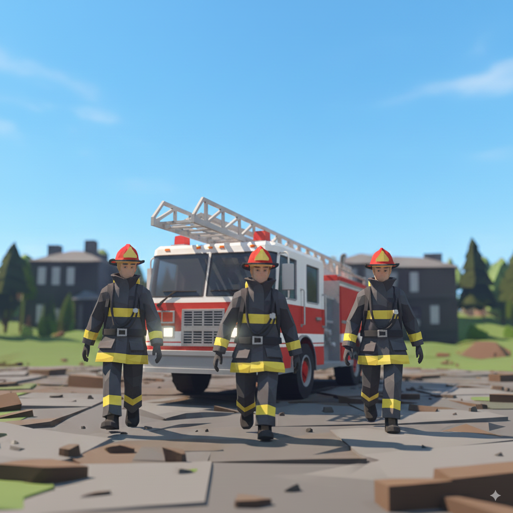
EMERGENCY SERVICES_ARRIVAL_(2)
GIVE THEM AN ACCESS BADGE(S) FROM THE LOBBY (INSIDE OF THE RED EMERGENCY FOLDER)
THIS FOLDER IS LOCATED IN THE TOP RIGHT PULL OUT DRAWER BEHIND THE SUPERVISOR DESK
THIS BADGE GETS THEM INTO AREAS OF THE FACILITY THEY NEED TO ACCESS TO PERFORM THEIR DUTIES
THIS BADGE HAS TO BE RETURNED TO THE RED FOLDER AT THE CONCLUSION OF THE SCENARIO
THIS BADGE IS TO ONLY BE USED BY EMERGENCY SERVICES
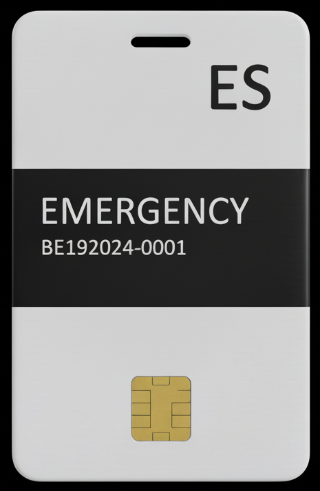
MAP_LAYOUT & BREAKDOWN
THIS MAP SHOWS YOU THE LAYOUT OF THE SITE & THE ASSEMBLY POINTS
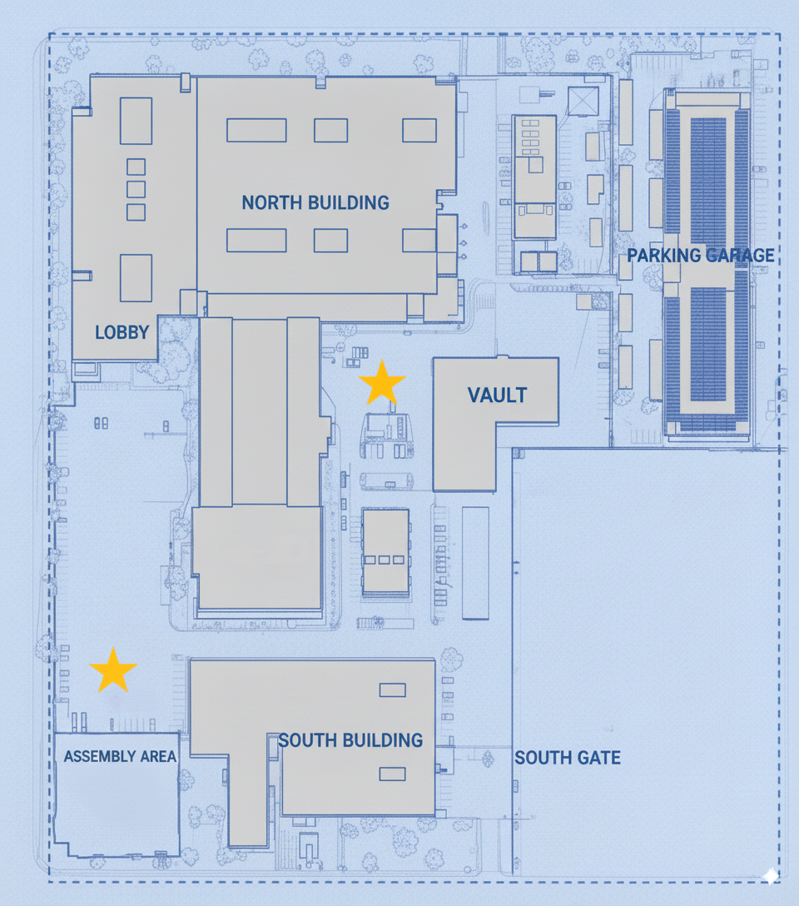